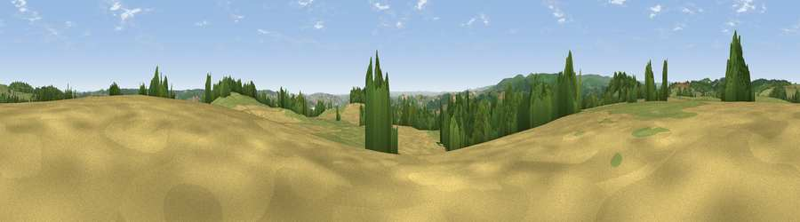

Viewpoint near Hennock
#9321 in England · top 18% of its area beats it · near HennockThe view, rendered

A 360° render of this exact spot computed from the terrain model, tree cover and land cover — summer colours, afternoon light, calibrated against photographs of famous viewpoints. Real trees, hedges and buildings will differ in detail.
The panorama
Grey silhouette: terrain skyline in each direction (720 bearings, Earth curvature and refraction included). Dashed green: skyline with trees (+15 m) and buildings (+8 m) as obstacles. Blue strip: how far the ground is visible on each bearing.
Where the view opens
Wedge length = distance to the farthest visible ground on that bearing (vegetation-aware). Rings at 10, 25 and 50 km.
What fills the view
42% grassland · 32% woodland · 25% cropland ·
Angular shares of the visible panorama (visual magnitude), not map area. Landscape diversity 0.49 (0–1 Shannon).
Key numbers
More beautiful places nearby
The staircase of upgrades: each row has a higher view potential than everything closer. Driving times are estimates from straight-line distance, calibrated against real road routing — check an actual route before setting out.
| Place | Direction | Drive | Score |
|---|---|---|---|
| Viewpoint near Hennock | SSE · 1 km | ~2 min | 70.7 |
| Shaptor Rock | W · 1 km | ~3 min | 71.0 |
| Viewpoint near Haytor Vale | WSW · 6 km | ~12 min | 80.1 |
| Viewpoint near Kenton | E · 11 km | ~20 min | 82.9 |
| Viewpoint near Holcombe | ESE · 13 km | ~24 min | 83.3 |
| Viewpoint near Shaldon | SE · 15 km | ~27 min | 83.8 |
| Viewpoint near Stokeinteignhead | SE · 15 km | ~27 min | 84.1 |
| High Peak | ENE · 29 km | ~45 min | 85.3 |
50.61403, -3.67008 · source: screening · position refined by local search. Computed location — check access rights before visiting.